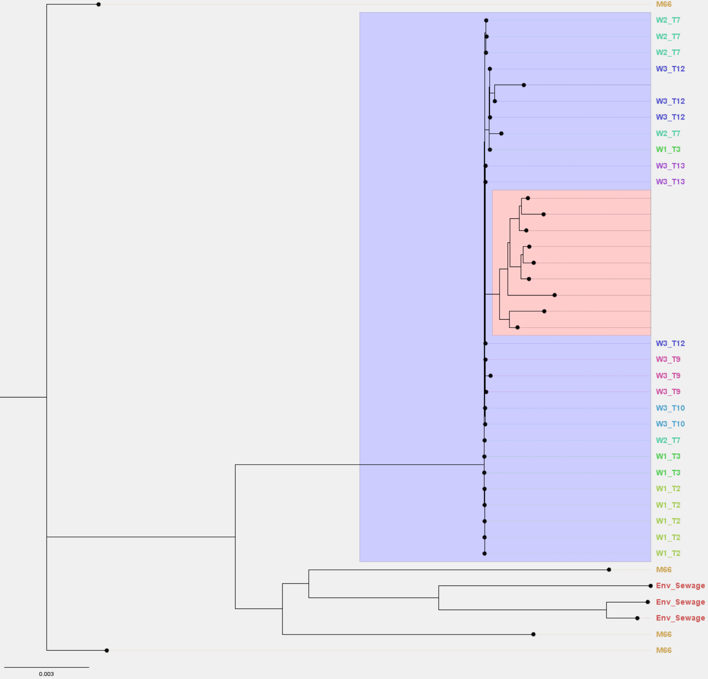
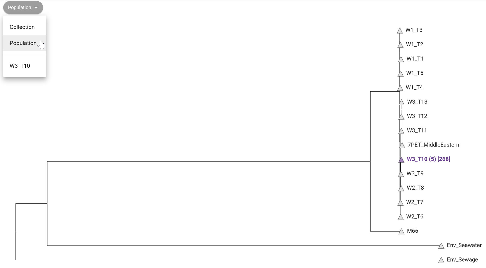

12 Building phylogenetic trees
- Recognise the use of phylogenetic inference in pathogen surveillance.
- Identify the closest lineage(s) to your samples based on phylogenetic tree analysis.
- Explain why a core genome alignment is necessary when working with Vibrio cholerae.
- Generate a core genome alignment from a set of genomes.
- Infer a phylogenetic tree from an alignment.
- Visualise and annotate phylogenetic trees.
- Assess whether errors are likely present in your assemblies based on the phylogenetic trees.
12.1 Pathogen Phylogenetics
Phylogenetic analysis aims to determine evolutionary relationships among organisms. In the context of pathogenic organisms, it is used to study the origin of human-infecting strains. This involves analyzing sequences from various bacterial/viral species infecting humans and other species. For instance, during the COVID-19 pandemic, inter-species phylogeny was used to trace the origin of the SARS-CoV-2 virus that adapted to infect humans.
Pathogen surveillance mostly focuses on intra-species phylogenies. Here, phylogenies are constructed from sequences within the same pathogenic species. The objective is to understand how specific strains and lineages relate and evolve. By analyzing genetic differences, we can track pathogen spread and identify outbreak sources. This section aims to answer: How do our Vibrio cholerae isolates relate to each other and to previously sequenced strains? This sheds light on relationships among isolates and their evolutionary context.
To construct a phylogeny, two primary steps are necessary:
- Multiple sequence alignment: to account for variations in sequence lengths due to insertions/deletions, aligning homologous residues of each sequence is the first step.
- Tree inference: with the aligned sequences, statistical models of sequence evolution are used to infer the most probable relationship between these sequences, based on observed substitutions.
Multiple sequence alignment is straightforward when dealing with a single gene or closely related species (e.g. clonal bacterial species). However, bacterial species can exhibit substantial differences due to factors like horizontal gene transfer (e.g. through conjugation or bacteriophages), gene duplication, and gene loss. In such cases, alignment focuses on the core genome, the gene set present in most species members, enabling inference of evolutionary relationships. This contrasts with the “accessory genome,” consisting of genes present only in some members of the species. The complete collection of core and accessory genomes in a species is referred to as the pangenome.
Given the diversity of Vibrio cholerae, which often acquires resistance genes through horizontal transfer, the phylogenetic process begins with generating a core genome alignment, forming the foundation for tree inference. We will explore phylogenetic analysis of Vibrio cholerae using Pathogenwatch, followed by a guide to constructing your own phylogenies using command line tools.
12.2 Phylogenies with Pathogenwatch
In the “collection view” screen for your samples, Pathogenwatch shows you a phylogenetic tree on the top-left panel, showing the relationship between the sequences in your collection. This shows how tightly our samples cluster with each other, and outliers may indicate assembly issues. For example, we can see from Figure 12.1 that “isolate05” clusters separately from the rest of the samples. From our previous analysis of assembly quality we saw that this sample had poorer sequencing coverage, which may have led to a higher error rate (because fewer sequencing reads were available to identify a consensus sequence).

We can also show how your samples relate to the “reference genomes” available in Pathogenwatch (Figure 12.2). These are genomes curated by the Vibriowatch project, which include several genomes that have been assigned to different phylogenetic lineages, and associated with transmission waves/events.

In Figure 12.2 we can see that all our 10 samples fall in the “W3_T13” clade (wave 3, transmission event 13). This reference clade corresponds to strains from the most recent transmission wave in Africa determined by Weill et al. 2017. This agrees with other pieces of evidence we aquired so far, that our strains are closely related to the most recent pathogenic strains circulating worldwide.
You can further “zoom in” on the tree to see how your samples relate to the reference samples present in this clade (Figure 12.3). This shows that although our samples are related to “W3 T3” reference samples, they have accumulated enough mutations that makes them cluster apart from the reference panel. Note that some of the lineage classification used by Pathogenwatch may be slightly outdated, as new strains emerge that were not part of the 2017 study mentioned above.

Phylogenetic analysis is also useful to assess our assembly quality with regards to validity/correctness of our sequences. If our sequences are very diverged from other sequences (i.e. several mutations separate them from other sequences), this may indicate a high error rate in our assemblies. However, this is not always easy to assess, as the public collection such as the one from Pathogenwatch (Figure 12.3) may have older sequences, so this may represent true divergence since the time those samples were collected.
To fully address if our samples likely have sequencing errors, we can do any of the following:
- Compare your samples with similar (or even the same) samples assembled with higher accuracy data. For example, following the advice given on the “perfect bacterial genome” pipeline (using a “hybrid assembly” approach with both Illumina and ONT data).
- Using more recent ONT chemistry, flowcells and basecalling software, which provide higher accuracy sequences.
- Compare our assemblies with recent samples from the same region/outbreak.
12.3 Phylogenies with local software
In the previous section we used Pathogenwatch to perform a phylogenetic analysis, using its inbuilt collection. While Pathogenwatch is user-friendly, it relies on a web-based service that might not always be accessible. Therefore, we introduce an alternative using command line tools suitable for local execution on your computer. The methodology we use here is similar to Pathogenwatch’s, but it employs distinct tools for generating the core genome and performing tree inference. Our toolkit consists of four software components:
- Panaroo - used to identify a set of “core genes” (genes occurring in most samples) and generate a multiple sequence alignment from them.
- SNP-sites - used to extract variable sites from the alignment (to save computational time).
- IQ-TREE - used to infer a tree from the aligned core genes.
- Figtree - used to visualise and/or annotate our tree.
We start our analysis by activating our software environment, to make all the necessary tools available:
mamba activate phylogeny12.3.1 Core genome alignment: panaroo
The software Panaroo was developed to analyse bacterial pangenomes. It is able to identify orthologous sequences between a set of sequences, which it uses to produce a multiple sequence alignment of the core genome. The output alignment it produces can then be used to build our phylogenetic trees in the next step.
As input to Panaroo we will use:
- The gene annotations for our newly assembled genomes, which were produced during the assembly pipeline using Bakta.
- Annotations from 31 public genomes downloaded from NCBI (see Section 6.5). These annotations had to be processed to be compatible with Panaroo, which we detail in the information box below.
To run Panaroo on our samples we can use the following commands:
# create output directory
mkdir results/panaroo
# run panaroo
panaroo \
--input results/assemblies/*.gff resources/vibrio_genomes/*.gff \
--out_dir results/panaroo \
--clean-mode strict \
--alignment core \
--core_threshold 0.98 \
--remove-invalid-genes \
--threads 8The options used are:
--input- all the input annotation files, in the Panaroo-compatible GFF format. Notice how we used the*wildcard to match all the files in each folder: theresults/assembliesfolder contains the annotations for our own genomes; theresources/vibrio_genomes/folder contains the public annotations (suitably converted to Panaroo-compatible format - see information box below).--out_dir- the output directory we want to save the results into.--clean-mode- determines the stringency of Panaroo in including genes within its pangenome graph for gene clustering and core gene identification. The available modes are ‘strict’, ‘moderate’, and ‘sensitive’. These modes balance eliminating probable contaminants against preserving valid annotations like infrequent plasmids. In our case we used ‘strict’ mode, as we are interested in building a core gene alignment for phylogenetics, so including rare plasmids is less important for our downstream task.--alignment- whether we want to produce an alignment of core genes or all genes (pangenome alignment). In our case we want to only consider the core genes, to build a phylogeny.--core_threshold- the fraction of input genomes where a gene has to be found to be considered a “core gene”. In our case we’ve set this to a very high value, to ensure most of our samples have the gene.--remove-invalid-genes- this is recommended to remove annotations that are incompatible with the annotation format expected by Panaroo.--threads- how many CPUs we want to use for parallel computations.
Panaroo takes a long time to run, so be prepared to wait a while for its analysis to finish .
Once if finishes, we can see the output it produces:
ls results/panarooaligned_gene_sequences/ core_alignment_header.embl gene_presence_absence_roary.csv
alignment_entropy.csv core_gene_alignment.aln pan_genome_reference.fa
combined_DNA_CDS.fasta core_gene_alignment_filtered.aln pre_filt_graph.gml
combined_protein_CDS.fasta final_graph.gml struct_presence_absence.Rtab
combined_protein_cdhit_out.txt gene_data.csv summary_statistics.txt
combined_protein_cdhit_out.txt.clstr gene_presence_absence.Rtab
core_alignment_filtered_header.embl gene_presence_absence.csvThere are several output files generated, which can be generated for more advanced analysis and visualisation (see Panaroo documentation for details). For our purpose of creating a phylogeny from the core genome alignment, we need the file core_gene_alignment_filtered.aln, which is a file in FASTA format. We can take a quick look at this file:
head results/panaroo/core_gene_alignment_filtered.aln>GCF_015482825.1_ASM1548282v1_genomic
atggctatttatctgactgaattatcgccggaaacgttgacattcccctctccttttact
gcgttagatgaccctaacggcctgcttgcatttggcggcgatctccgtcttgaacgaatt
tgggcggcttatcaacaaggcattttcccttggtatggccctgaagacccgattttgtgg
tggagcccttccccacgtgccgtgtttgaccctactcggtttcaacctgcc-aaaagcgt
gaagaagttccaacgtaaacatcagtatcgggttagcgtcaatcacgcgacgtcgcaagt
gattgagcagtgcgcgctcactcgccctgcggatcaacgttggctcaatgactcaatgcg
ccatgcgtatggcgagttggcgaaacaaggtcgttgccattctgttgaggtgtggcaggg
cgaacaactggtgggtgggctttatggcatttccgttggccaactgttttgtggcgaatc
catgtttagcctcgcaaccaatgcctcgaaaattgcgctttggta-tttttgcgaccattWe can see this contains a sequence named “GCF_015482825.1_ASM1548282v1_genomic”, which corresponds to one of the NCBI genomes we downloaded. We can look at all the sequence names in the FASTA file:
grep ">" results/panaroo/core_gene_alignment_filtered.aln>GCF_015482825.1_ASM1548282v1_genomic
>GCF_019704235.1_ASM1970423v1_genomic
>GCF_013357625.1_ASM1335762v1_genomic
>GCF_017948285.1_ASM1794828v1_genomic
>GCF_009763825.1_ASM976382v1_genomic
>isolate01
>GCF_013357665.1_ASM1335766v1_genomic
>GCF_009762915.1_ASM976291v1_genomic
>GCF_009762985.1_ASM976298v1_genomic
... more output omitted to save space ...We can see each input genome appears once, including the “isolateXX” genomes assembled and annotated by us.
Panaroo requires GFF files in a non-standard format. They are similar to standard GFF files, but they also include the genome sequence itself at the end of the file. By default, Bakta (which we used earlier to annotate our assembled genomes) already produces files in this non-standard GFF format.
However, GFF files downloaded from NCBI will not be in this non-standard format. To convert the files to the required format, the Panaroo developers provide us with a Python script that can do this conversion:
python3 convert_refseq_to_prokka_gff.py -g annotation.gff -f genome.fna -o new.gff-gis the original GFF (for example downloaded from NCBI).-fis the corresponding FASTA file with the genome (also downloaded from NCBI).-ois the name for the output file.
This is a bit more advanced, and is included here for interested users. We already prepared all the files for performing a phylogeny, so you don’t need to worry about this for the workshop.
12.3.2 Extracting variable sites: snp-sites
Although you could use the alignment generated by Panaroo directly as input to IQ-TREE, this would be quite computationally heavy, because the core genome alignments tend to be quite big. Instead, what we can do is extract the variable sites from the alignment, such that we reduce our FASTA file to only include those positions that are variable across samples.
Here is a small example illustrating what we are doing. For example, take the following three sequences, where we see 3 variable sites (indicated with an arrow):
seq1 C G T A G C T G G T
seq2 C T T A G C A G G T
seq3 C T T A G C A G A T
↑ ↑ ↑For the purposes of phylogenetic tree construction, we only use the variable sites to look at the relationship between our sequences, so we can simplify our alignment by extract only the variable sites:
seq1 G T G
seq2 T A G
seq3 T A AThis example is very small, but when you have a 4Mb genome, this can make a big difference. To extract variable sites from an alignment we can use the SNP-sites software:
# create output directory
mkdir results/snp-sites
# run SNP-sites
snp-sites results/panaroo/core_gene_alignment_filtered.aln > results/snp-sites/core_gene_alignment_snps.alnThis command simply takes as input the alignment FASTA file and produces a new file with only the variable sites - which we redirect (>) to an output file. This is the file we will use as input to constructing our tree.
However, before we move on to that step, we need another piece of information: the number of constant sites in the initial alignment (sites that didn’t change). Phylogenetically, it makes a difference if we have 3 mutations in 10 sites (30% variable sites, as in our small example above) or 3 mutations in 1000 sites (0.3% mutations). The IQ-TREE software we will use for tree inference can accept as input 4 numbers, counting the number of A, C, G and T that were constant in the alignment. For our small example these would be, respectively: 1, 2, 2, 2.
Fortunately, the snp-sites command can also produce these numbers for us (you can check this in the help page by running snp-sites -h). This is how you would do this:
# count invariant sites
snp-sites -C results/panaroo/core_gene_alignment_filtered.aln > results/snp-sites/constant_sites.txtThe key difference is that we use the -C option, which produces these numbers. Again, we redirect (>) the output to a file.
We can see what these numbers are by printing the content of the file:
cat results/snp-sites/constant_sites.txt635254,561931,623994,624125As we said earlier, these numbers represent the number of A, C, G, T that were constant in our original alignment. We will use these numbers in the tree inference step detailed next.
12.3.3 Tree inference: iqtree
There are different methods for inferring phylogenetic trees from sequence alignments. Regardless of the method used, the objective is to construct a tree that represents the evolutionary relationships between different species or genetic sequences. Here, we will use the IQ-TREE software, which implements maximum likelihood methods of tree inference. Phylogenetic tree inference using maximum likelihood is done by identifying the tree that maximizes the likelihood of observing the given DNA sequences under a chosen evolutionary model.
In this process, DNA substitution models describe how DNA sequences change over time due to mutations. These models consider how frequently different bases (A, T, C, G) are replaced by each other. Another parameter these models can include is rate heterogeneity, which accounts for the fact that different DNA sites may evolve at different rates. Some sites might change rapidly, while others remain more stable.
Maximum likelihood aims to find the tree topology and branch lengths that make the observed DNA sequences most probable, given the chosen model. It does this by exploring various tree shapes and lengths to calculate the likelihood of the observed sequences. The tree with the highest likelihood is considered the best representation of the evolutionary relationships among the sequences. The process involves making educated guesses about the tree’s parameters, calculating the likelihood of the data under these guesses, and refining the parameters iteratively to find the optimal tree that best explains the observed genetic variations.
IQ-TREE offers various sequence evolution models, allowing researchers to match their analyses to different types of data and research questions. Conveniently, this software can identify the most fitting substituion model for a dataset (using a tool called ModelFinder), while considering the complexity of each model.
We run IQ-TREE on the output from SNP-sites, i.e. using the variable sites extracted from the core genome alignment:
# create output directory
mkdir results/iqtree
# run iqtree2
iqtree -s results/snp-sites/core_gene_alignment_snps.aln -fconst 635254,561931,623994,624125 --prefix results/iqtree/awd -nt AUTO -m GTR+F+IThe options used are:
-s- the input alignment file, in our case using only the variable sites extracted withsnp-sites.--prefix- the name of the output files. This will be used to name all the files with a “prefix”. In this case we are using the “awd” prefix, which is very generic. In your own analysis you may want to use a more specific prefix (for example, the name of the collection batch).-fconst- these are the counts of invariant sites we estimated in the previous step withsnp-sites(see previous section).-nt AUTO- automatically detect how many CPUs are available on the computer for parallel processing (quicker to run).-m- specifies the DNA substitution model we’d like to use. We give more details about this option below.
When not specifying the -m option, iqtree employs ModelFinder to pinpoint the substitution model that best maximizes the data’s likelihood, as previously mentioned. Nevertheless, this can be time-consuming (as iqtree needs to fit trees numerous times). An alternative approach is utilizing a versatile model, like the one chosen here, “GTR+F+I,” which is a generalized time reversible (GTR) substitution model. This model requires an estimate of the base frequencies within the sample population, determined in this instance by tallying the base frequencies from the alignment (indicated by “+F” in the model name). Lastly, the model accommodates variations in rates across sites, including a portion of invariant sites (noted by “+I” in the model name).
We can look at the output folder:
ls results/iqtreeawd.bionj awd.ckp.gz awd.iqtree awd.log awd.mldist awd.model.gz awd.treefileThere are several files with the following extension:
.iqtree- a text file containing a report of the IQ-Tree run, including a representation of the tree in text format..treefile- the estimated tree in NEWICK format. We can use this file with other programs, such as FigTree, to visualise our tree..log- the log file containing the messages that were also printed on the screen..bionj- the initial tree estimated by neighbour joining (NEWICK format)..mldist- the maximum likelihood distances between every pair of sequences..ckp.gz- this is a “checkpoint” file, which IQ-Tree uses to resume a run in case it was interrupted (e.g. if you are estimating very large trees and your job fails half-way through)..model.gz- this is also a “checkpoint” file for the model testing step.
The main files of interest are the report file (.iqtree) and the tree file (.treefile) in standard Newick format.
12.3.4 Visualising trees: FigTree
There are many programs that can be used to visualise phylogenetic trees. In this course we will use FigTree, which has a simple graphical user interface. You can open FigTree from the terminal by running the command figtree.
To open the tree:
- Go to File > Open… and browse to the folder with the IQ-TREE output files.
- Select the file with
.treefileextension and click Open. - You will be presented with a visual representation of the tree.
We can also import a “tab-separated values” (TSV) file with annotations to add to the tree, if you have any available (e.g. country of origin, date of collection, etc.). To add annotations:
- Go to File > Import annotations… and open the annotation file. This file has to be in tab-delimited format.
- On the menu on the left, click Tip Labels and under “Display” choose one of the fields of our metadata table.
There are many ways to further configure the tree, including highlighting clades in the tree, and change the labels. See the Figure 12.4 for an example.

12.4 Exercises
For these exercises, you can either use the dataset we provide in Data & Setup, or your own data. You also need to have completed the genome assembly exercise in Section 8.4.
Following from the Pathogenwatch exercise in Section 10.4, open the “Ambroise 2023” collection that you created and answer the following questions:
- Does any of your sequences look like an outlier (i.e. a very long branch) in the sample tree view?
- Change the tree view to “Population”. Which transmission wave do your samples cluster with?
- Looking within the population(s) where your samples cluster in, do your samples cluster together or are they interspersed between other samples from the Pathogenwatch collection?
Looking at our samples’ tree doesn’t reveal any sample as a particular outlier.
Looking at the “Population” view (from the dropdown on the top-left, as shown below), we can see that all of the “Ambroise 2023” samples fall within the “W3_T10” clade. This is a recent transmission wave, confirming our strains are pathogenic and related to other recent strains (Weill et al. 2017).

Looking inside the clade, we can see that our samples cluster somewhat apart from the rest, suggesting they are more similar to each other than they are with the samples from the Pathogenwatch collection. This might be because our samples are from 2023, whereas the collection from Pathogenwatch is from 2017, so it is likely that these strains have accumulated new mutations since then.

Note that in the image above we changed our tree layout to a “circle”. Sometimes this view is helpful when we have too many sequences.
12.5 Summary
- Phylogenetic inference is a crucial tool in pathogen surveillance, enabling us to understand the relatedness of pathogen strains, trace transmission routes, and identify the sources of outbreaks.
- Phylogenetic tree analysis helps identify the closest relatives or lineages of your pathogen samples.
- For Vibrio cholerae, it can crucially identify whether our samples belong to the highly transmissible and virulent 7PET lineage.
- A core genome alignment is essential for Vibrio cholerae due to its high genetic diversity, as it captures conserved genomic regions shared across strains and provides a robust basis for phylogenetic analysis.
- Creating a core genome alignment involves identifying shared genes across genomes and aligning these sequences. This task can be achieved using the
panaroosoftware. - A phylogenetic tree is constructed from a core genome alignment using algorithms such as maximum likelihood to infer the most likely relationship among strains. This task can be achieved using the
iqtreesoftware. - To reduce the computational burden of the analysis, we can extract variable sites from our alignment using the
snp-sitessoftware. Its output can be used with theiqtreementioned above. - Phylogenetic trees can be visualized and annotated using software like FigTree.
- Phylogenetic trees can serve as a valuable tool to assess assembly quality by revealing inconsistencies, such as unexpected placements of samples within the tree or high divergence relative to other samples from similar outbreaks. These may indicate potential sequencing errors affecting the accuracy of our assembly.